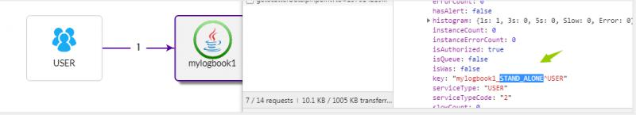

在启动一个挂载pinpoint的springboot项目的时候，界面上显示成了jboss的图标，所以今天研究了一下这个数据是怎么来的。
我们知道不同图标和服务类型有关，服务不同，图标就不同，这在代码里面使用一个ServiceType属性来描述。
Sending AgentInfo TAgentInfo....
hostname:izwz98jc3nwxdjxg1yfd1hz, ip:172.xx.xx, ports:,
agentId:testboot_agentId, applicationName:testboot_45,
serviceType:1210, pid:28277, agentVersion:1.8.0,
AgentInfo sent.@AgentId String agentId,
@ApplicationName String applicationName,
@Container boolean isContainer,
@AgentStartTime long agentStartTime,
@ApplicationServerType ServiceType serverType // service type
this.applicationServerType = readString("profiler.applicationservertype", null);没错，就是UNDEFINED。没定义肯定取不到值呀。
此时，pinpoint会获取所有已经注册的插件，调用他们的detect方法。如果校验通过，则直接返回插件中配置的serviceType。
boolean detect(ConditionProvider provider);ServiceType STAND_ALONE = of(1000, "STAND_ALONE", RECORD_STATISTICS);
借用下群友图片，我们知道如果不配置，默认会去检测MAIN-CLASS的值有没有和pinpoint.config中的配置对应上。
一旦检测到，就返回对应插件的serverType，也就是SpringBoot。
profiler.jboss.traceEjb=false
profiler.applicationservertype=JBOSS欢迎来公众号【侠梦的开发笔记】 一起交流进步